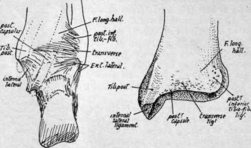
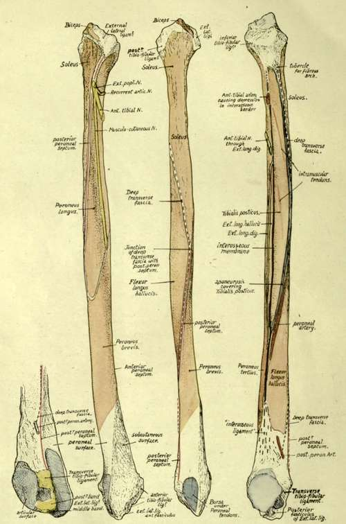

Fibula. Part 6
Description
This section is from the book "The Anatomy Of The Human Skeleton", by J. Ernest Frazer. Also available from Amazon: The anatomy of the human skeleton.
Fibula. Part 6
Observe that the malleolus has its long axis directed downwards and forwards : the attachments of ligaments to it are shown in the figures.
The inner surface and subcutaneous border of the bone can be directly palpated during life, practically throughout its extent. The whole upper end can be taken between thumb and fingers and examined, but its central front part, above the tubercle, is hidden by the patellar tendon and infrapatellar pad.
Fig. 136.-Posterior view of right ankle, and of right tibia.
Fig. 137.-Right fibula. On the left, the lower end is seen from behind and internally. The other figures, in order, show the bone from the outside, from behind, and from the inner side. Explanations in the text.
Observe that the styloid process is placed behind and outside the articular surface on the head, and that the rough markings round the articular facet show the presence of areas of ligamentous attachment ; these markings are best developed in front of the styloid process, extending here on to the outer side of the head and showing the insertion of the external lateral ligament, while round the other borders of the facet they are made by the capsular ligamentous fibres of the tibio-fibular joint.
The extent of attachment of the external lateral ligament and of the Biceps tendon that covers it is seen in Fig. 137. Peroneus longus, arising from the outer side of the upper part of the shaft, extends on to the lateral ligament as well as across the anterior tibio-fibular bands to reach the tibia (Fig. 133), and the Biceps tendon gives an aponeurotic expansion over this muscle as well as over the extensors.
Soleus arises from the back surface of the upper part of the shaft and from the back of the head as far up as the base of the process : on its inner side here there is a tubercle which marks the attachment of the fibrous arch along which the origin of the muscle passes from the tibia.
On the inner side the ligamentous markings come lower down than on the other margins of the facet, and below these, on the inner side of the neck, the bone is in relation with the anterior tibial artery passing outwards, forwards and downwards above Tibialis posticus.
The Extensor longus digitorum arises from the neck in front of this arterial region, its origin running up to the ligamentous area where it passes, with the Peroneus longus, across to the tibia.
The shaft of the bone has the appearance of being twisted in its length through a quarter-turn in an outward direction : this is due to the disposition of the muscles on it, for the bone is moulded in its shape by the muscles applied to it, and its margins mark the attachment of strong fibrous septa between these muscles, so that, to understand the arrangement of surfaces and lines on it, it is necessary to consider the structures that produce them.
First find the interosseous border. The inner aspect of the bone can be recognised at once by the presence of articular facets on it, and there is a triangular rough area, above the lower facet for the astragalus, that is made by the fibres of the interosseous ligament. This ligament is really an ill-defined thickening of the lower end of the interosseous membrane, so that the line of the membrane can be immediately found as a ridge leading up from the rough area (Fig. 137). Trace this up, and it is seen to divide into two : the anterior line is the proper continuation of the interosseous border, the posterior and more salient ridge being for the aponeurosis covering Tibialis posticus.
The interosseous line can be followed up to the neck of the bone, and it divides the inner aspect of the shaft into extensor and flexor regions : the extensors of the foot lie immediately in front of it, and therefore occupy the area, variable in breadth but never very wide, which lies between the interosseous line and the front border, while the flexors of the foot lie behind it. Of these flexors the deepest is the Tibialis posticus, which arises from the membrane and from the bones on each side of the membrane, so that its area of origin on the fibula lies immediately behind the interosseous hne : it is bounded behind by the prominent postero-internal border and extends up to the neck of the bone, including, within its limits, the oblique hne or lines made by the intramuscular tendons in the substance of the muscle (Fig. 137). The aponeurosis covering Tibialis posticus affords origin to the next layer of muscles, the long flexors of the toes. Flexor longus hallucis is very much stronger than Flexor longus dig., so that the outer part of the aponeurosis is much thicker and stronger than the inner part, and this corresponds with the differences in the appearances of the lines of attachment of the aponeurosis to the bones : the outer line forms the prominent postero-internal border of the fibula, whereas the inner attachment makes the badly-marked vertical line on the tibia. These two lines separate the area of Tibialis posticus on each bone from the area of the corresponding long flexor, so the area for Flexor longus hallucis on the fibula is immediately behind the postero-internal border, on the posterior surface of the bone.
Tibialis posticus passes downwards and inwards from its origin (Fig. 134) across the tibia, and thus leaves the region of the interosseous membrane. In this way the aponeurosis that covers it comes into relation with the membrane as the muscle inclines away from it, and so we get the explanation of the postero-internal ridge running below into the interosseous border : it marks the lower end of origin of Tibialis posticus, and comparison of a few bones will make it evident that the extent of this origin and the consequent position of the junction of the two ridges is very variable. Moreover, the size of the muscle does not vary with the general muscularity of the individual.
Now examine the flexor surfaces of the fibula, and it is clearly apparent that the Tibialis posticus takes the whole of the inner aspect of the surface in the middle of the shaft and Flexor longus hallucis is altogether on the posterior aspect. But as we follow the surfaces down we find the Tibialis area narrowing until it disappears, and, as it narrows, the area for the long flexor, keeping close to it, gets more and more on the inner side, so that in the lower part it is altogether on the inner aspect--in other words, the long flexor, arising partly from the aponeurotic covering of the Tibialis posticus, is carried by this to the interosseous membrane when the latter muscle leaves it uncovered, and is in this way brought to the inner side of the shaft. If the Tibialis is small the long flexor comes to the inner side comparatively high up and acquires an origin from the membrane, but under opposite circumstances it may not do so.
Here we have the explanation of the twisted appearance of the bone, and at the same time we can see the " curve " of the twist, and therefore the appearance of any individual bone, depends really on the size of the Tibiahs posticus. As soon as this muscle leaves the fibula the Flexor longus hallucis takes its place on the inner side of the bone, and thus affords opportunity for the peroneal tendons to come on the back of the bone so that they may pass behind the malleolus to obtain their proper action on the foot : because the bone is moulded by the muscles we therefore find that its posterior surface, traced down, becomes internal, and its outer surface can be followed down to the groove behind the malleolus.
The extensors of the foot arise from the bone immediately internal to the Peronei, that is, from the anterior surface between the anterior edge and the interosseous line. Follow the anterior surface down : when the Peronei move round towards the back of the bone, away from its outer aspect, the extensors do not follow them but remain on its front surface, and thus the lower part of the outer aspect is left uncovered and becomes the triangular " subcutaneous area".
If the foregoing account of the way in which the surfaces are disposed on the fibula is thoroughly understood there can be no difficulty in following the minor details on the bone. It is better to deal first with the muscles (Fig. 137).
Continue to:
- prev: Fibula. Part 5
- Table of Contents
- next: Tibialis Posticus